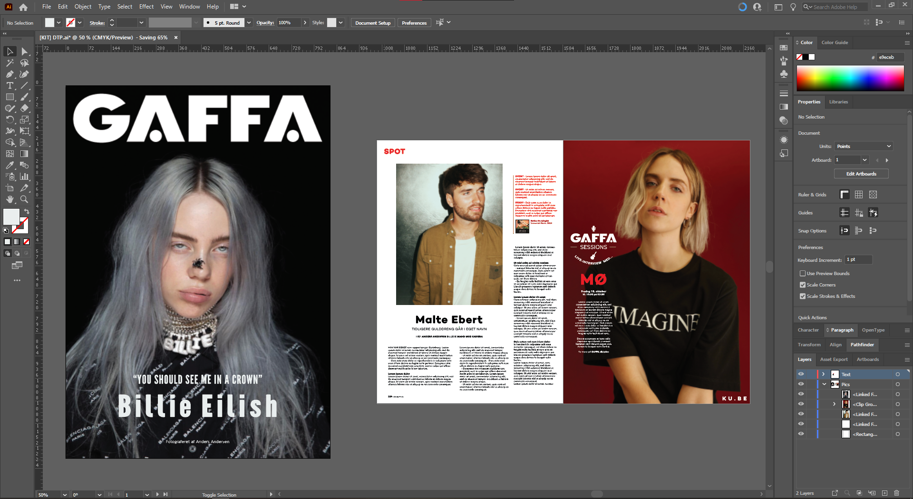

En øvelse i DTP, hvis formål var at kopiere et eksisterende magasins opbygning og visuelle udtryk som træning. I dette tilfælde: musikmagasinet Gaffa.
Gaffa imitation
Fra start til slut og hvordan

Krav
Da opgaven blot var en øvelse til en visual imitation, var kravene ikke decideret specfikke.
- - Analyser og documenter førnævnte analyse af valgt magasin med fokus på fagord
- - Udarbejd en imitation af magasin
- - Begrund fagligt for valg taget
Min rolle

Mit gruppemedlem og jeg stod begge til at analysere Gaffa magasinet. Efter det, stod ham og jeg til at skrive rapport, mens jeg producerede magasinet med feedback fra ham.
Tankerne bag
Efter at have analyseret magasinets kendetræk, gik produktion i gang med at lave selve magasinet.
Da magasinet skulle visuelt ligne deres andre magasiner, var det ret fremadrettet hvordan det
skulle laves og hvordan det endeligt skulle se ud.
Scroll op